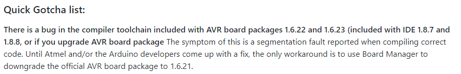

Since I want to use an 8x8 Pixel Matrix for my final project I wanted to test it out now.
To test if I can even use it I tried to upload an empty sketch with just
8x8.ino
#include <Adafruit_LEDBackpack.h>
I got the compilation error again, meaning that this library doesn't support the ATTiny45.
Then I tried a speaker. I soldered wires to the speaker so I can connect it to my Board.
I then wrote a simple code that plays a tone from the speaker. Since the speaker needs to vibrate I have to constantly change a value for it to vibrate.
sound.ino
int i = 0; //int for analog value
bool up = true; //bool as switch
void setup() {
pinMode(A3, OUTPUT); //speaker pin as output
}
void loop() {
if(up){
i++; //raise the value
}else{
i--; //lower the value
}
if(i >= 255){
up = false; //flip switch if value is too high
}
if(i <=0){
up = true; //flip switch if value is too low
}
analogWrite(A3, i); //write value to speaker pin
}
Getting the tone function to work was a lot of hassle. The original ATTiny board manager package I used doesn't support the tone() function which I found out thanks to this Github Issue of a different ATTiny Core Package.
I decided to use this ATTiny Core Package and used this installation guide using the "Boards Manager Installation" method.
After getting a "Access Denied" compilation error I wasted a lot of time not reading the Github Page of the package.
So after reading that I downgraded the AVR board package and got a different error stating that some config files could not be read.
I removed the package using the board manager and used the different method from the installation guide. And to my joy it worked perfectly. The tone() function finally worked.
To finish up this assignment I wrote a melody (that could not be too long since the memory restriction of the ATTiny45). I used this tutorial as a base.
speakerTest.ino
#include "pitches.h"
// This array contains all the notes being played in the melody
int melody[] = {
NOTE_E7, NOTE_E7, 0, NOTE_E7,
0, NOTE_C7, NOTE_E7, 0,
NOTE_G7, 0, 0, 0,
NOTE_G6, 0, 0, 0,
NOTE_C7, 0, 0, NOTE_G6,
0, 0, NOTE_E6, 0,
0, NOTE_A6, 0, NOTE_B6,
0, NOTE_AS6, NOTE_A6, 0,
NOTE_G6, NOTE_E7, NOTE_G7,
NOTE_A7, 0, NOTE_F7, NOTE_G7,
0, NOTE_E7, 0, NOTE_C7,
NOTE_D7, NOTE_B6, 0, 0,
};
// This array contains the lenght of the notes
int noteDurations[] = {
12, 12, 12, 12,
12, 12, 12, 12,
12, 12, 12, 12,
12, 12, 12, 12,
12, 12, 12, 12,
12, 12, 12, 12,
12, 12, 12, 12,
12, 12, 12, 12,
9, 9, 9,
12, 12, 12, 12,
12, 12, 12, 12,
12, 12, 12, 12,
};
void setup() {
// This for loop goes through all notes in the melody array
for (int thisNote = 0; thisNote < 8; thisNote++) {
// to calculate the note duration, take one second divided by the note type.
//e.g. quarter note = 1000 / 4, eighth note = 1000/8, etc.
int noteDuration = 1000 / noteDurations[thisNote];
tone(3, melody[thisNote], noteDuration);
// to distinguish the notes, set a minimum time between them.
// the note's duration + 30% seems to work well:
int pauseBetweenNotes = noteDuration * 1.30;
delay(pauseBetweenNotes);
// stop the tone playing:
noTone(3);
}
}
void loop() {
}
Also be sure to save the pitches.h in the same sketch.
pitches.h
/*************************************************
* Public Constants
*************************************************/
#define NOTE_B0 31
#define NOTE_C1 33
#define NOTE_CS1 35
#define NOTE_D1 37
#define NOTE_DS1 39
#define NOTE_E1 41
#define NOTE_F1 44
#define NOTE_FS1 46
#define NOTE_G1 49
#define NOTE_GS1 52
#define NOTE_A1 55
#define NOTE_AS1 58
#define NOTE_B1 62
#define NOTE_C2 65
#define NOTE_CS2 69
#define NOTE_D2 73
#define NOTE_DS2 78
#define NOTE_E2 82
#define NOTE_F2 87
#define NOTE_FS2 93
#define NOTE_G2 98
#define NOTE_GS2 104
#define NOTE_A2 110
#define NOTE_AS2 117
#define NOTE_B2 123
#define NOTE_C3 131
#define NOTE_CS3 139
#define NOTE_D3 147
#define NOTE_DS3 156
#define NOTE_E3 165
#define NOTE_F3 175
#define NOTE_FS3 185
#define NOTE_G3 196
#define NOTE_GS3 208
#define NOTE_A3 220
#define NOTE_AS3 233
#define NOTE_B3 247
#define NOTE_C4 262
#define NOTE_CS4 277
#define NOTE_D4 294
#define NOTE_DS4 311
#define NOTE_E4 330
#define NOTE_F4 349
#define NOTE_FS4 370
#define NOTE_G4 392
#define NOTE_GS4 415
#define NOTE_A4 440
#define NOTE_AS4 466
#define NOTE_B4 494
#define NOTE_C5 523
#define NOTE_CS5 554
#define NOTE_D5 587
#define NOTE_DS5 622
#define NOTE_E5 659
#define NOTE_F5 698
#define NOTE_FS5 740
#define NOTE_G5 784
#define NOTE_GS5 831
#define NOTE_A5 880
#define NOTE_AS5 932
#define NOTE_B5 988
#define NOTE_C6 1047
#define NOTE_CS6 1109
#define NOTE_D6 1175
#define NOTE_DS6 1245
#define NOTE_E6 1319
#define NOTE_F6 1397
#define NOTE_FS6 1480
#define NOTE_G6 1568
#define NOTE_GS6 1661
#define NOTE_A6 1760
#define NOTE_AS6 1865
#define NOTE_B6 1976
#define NOTE_C7 2093
#define NOTE_CS7 2217
#define NOTE_D7 2349
#define NOTE_DS7 2489
#define NOTE_E7 2637
#define NOTE_F7 2794
#define NOTE_FS7 2960
#define NOTE_G7 3136
#define NOTE_GS7 3322
#define NOTE_A7 3520
#define NOTE_AS7 3729
#define NOTE_B7 3951
#define NOTE_C8 4186
#define NOTE_CS8 4435
#define NOTE_D8 4699
#define NOTE_DS8 4978
Here is a video of the melody playing